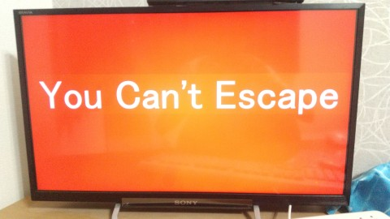

※Using Google translate※
※Most of the pages are written in Japanese. Please translate them yourself.※
・Calculating huge numbers, Convolution of wav files, Prank programs etc.
※※※We are not responsible for any disadvantages that may arise from running these programs.※※※
Speed change, pitch change, convolution reverb, downsampling etc.
Web scraping is done on AtWiki to find the page of the song in question and get the lyrics from there.
The appearance of the image changes depending on the application
The one on the Home

If you see an image that is not cute, try image searching...
※There is no English version yet.
In Search → Details, if there is a standalone article about the song on atwiki (no overlapping song titles), a URL to the article will be generated.
The server start command is "rails s"

※The initial database is in Japanese.
myapp.zipAdditional practice for server-to-server communication with Go (running both the Go side and the Ruby side)
Ruby+Go.zip使用例
var exp = new Exp(100,1); //10^10^100 (1Googolplex)
letter_type = 1; //display format 0...format of XeY 1...Japanese 2...∞(1.8e308)standard
document.getElementById("exp").innerHTML = Text(exp);//display
>>
DK1...If you try hard, you can close the application.
DK1+...You can close it by rebooting
DK1++...It will run automatically when the OS starts.
DK1↓

DK1+,DK1++↓
Using Hatsune Miku images and songs at DK1p and DK1pp
I didn't have much time so I made it in about 2-3 hours (the cutouts are rough).

Key input becomes very inconvenient.
Be careful not to allow users to enter important information!
You can delete it using Task Manager.
Forms, Label, and Button classes have been adjusted to be written in the same way as C# (NET.Framework) as much as possible.
No updates planned
Form.jsExample
class Form1 extends Forms{
constructor(){
super();
this.Location.X = window.innerWidth / 2 - this.Size.Width / 2;
this.Location.Y = window.scrollY + window.innerHeight / 2 - this.Size.Height / 2;
this.Text = "確認";
this.t1 = new Label();
this.t1.Location.X = 150;
this.t1.Location.Y = 100;
this.BackColor = "#E0FFE0";
this.t1.Text = "みえるかな？";
this.bt1 = new Button();
this.bt1.Location.X = 100;
this.bt1.Location.Y = 220;
this.bt1.Text = "はい";
this.bt1.onclick = "f1.Close();";
this.bt2 = new Button();
this.bt2.Location.X = 250;
this.bt2.Location.Y = 220;
this.bt2.Text = "いいえ";
this.bt2.onclick = "alert('嘘つき...');f1.Close();";
}
init(){
this.Add_Object(this.t1); //3つともForms.Show();が実行される.
this.Add_Object(this.bt1);
this.Add_Object(this.bt2);
}
}
var f1 = new Form1();
f1.init();
>>A dialog box will appear
Web(This is newer and recommended. It's easy to change the key because it's a GUI.)
Mid.zipYou can create MIDI files by combining commands. The commands are in a format similar to Taiko-san Jiro.
Enter scales with commas, commands with semicolons or line breaks.
Example:
#HU 4;C4,E2,F5,-,
Scale example
C...C4 F♯...FS4 (low) B♭...BF3 E double sharp...EDS4 G♭♭...GDF4 Rest...-
↓Series with # x=natural number
#BPM x BPM
#CH x Track (0-15, 9 is for drums only)
#HU x nth note
#SF x Key signature (-7 to 7)
#POWER x Volume (up to 127)
#TONE x Tone (up to 127) See instrument number.txt
#X x Length x times e.g. dotted eighth note A #HU 16;#X 3;A4,#X 1; 'Close with #X 1
#DELAY x Delay x [ms]
↓Other
'...Comment
|...Chord
Example) C major
C4|E4|G4,
Tone specification...0 as is, enter anything else to specify instruments for all parts (1-128)
Pitch...Raise by n semitones, lower by negative value
Key signature...Change the number of key signatures, increase by # with positive value, increase by ♭ with negative value
Enter -3 for major key to make it minor, enter 3 for minor key to make it major
Part selection...Select the part (channel number) you want to use.
Select a number that is not written to end selection, leave blank to output all parts
[Integer][Scale][Integer][Scale]...Write in a series like [Integer][Scale][Special command].
Example: (Lower B by a semitone, raise F by a semitone)
-1B+1F
Example: (Raise F by a semitone, but ignore the accidental that was originally attached (Special command [XA]))
+1FXA
Example (Sakura no Ame (chorus version) 6 parts I worked hard to type in. Time to create: 6 hours)


Below, other than the program
Example(32px)(From 2ch)：
375: Classical名無しさん 2020/02/04(火) 21:41:13.39 ID:kDgpMthj
今日帰りにインド人がやってるカレー屋に行ったんだけど、
カレー注文したらスプーンがついてこなくて
「あ、本格的な店なんだ」とか思って手で食ってたら、
半分くらい食ったときに、インド人の店員が奥から
すげー申し訳なさそうな顔してスプーン持ってきた
Below are some prototypes I made when I was in high school, and I have no plans to update them.
Create a data pack by dragging and dropping files
Animasa type (pmd files included in MMD) will leave gaps but will work (pmd files alone will probably be successful)
The command is /function printer:printer (quite heavy, increase the number of command chains and calculation distance)